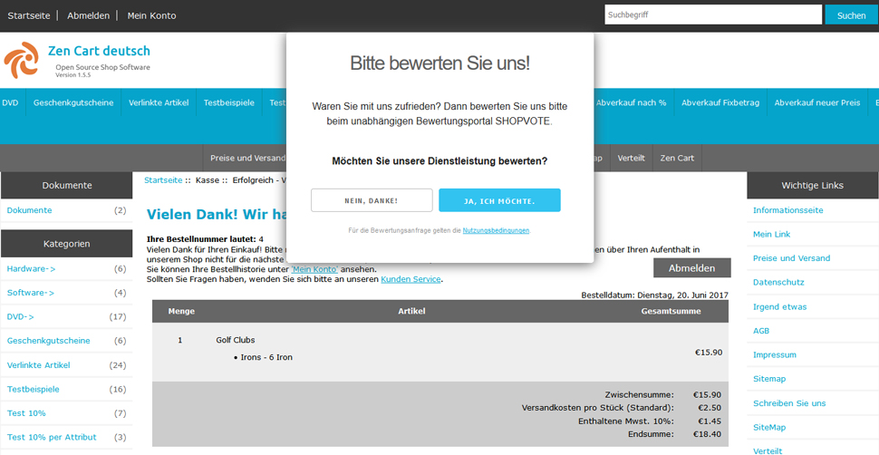
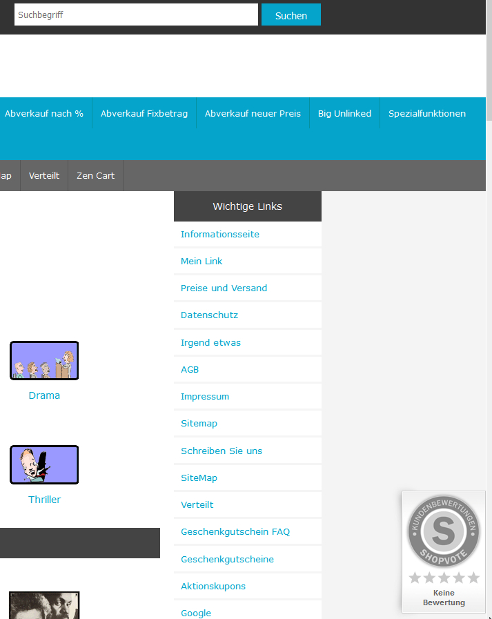

Was ist Shopvote?
Seit über 10 Jahren vertrauen Verbraucher und Unternehmen auf Shopvote als Experten für Online-Bewertungen.
Kostenlos. Unabhängig. Zuverlässig.
Einige der kostenlosen Shopvote Features:
Bewertungen ohne Limit
Vergessen Sie Bewertungslimits. Bei SHOPVOTE können Sie unbegrenzt Bewertungen sammeln. Egal, ob 10 oder 1000 Bewertungen im Monat - je mehr Kundenmeinungen Sie sammeln, umso aussagekräftiger wird Ihr Bewertungsprofil.
Übergabe Ihrer Bewertungen an Google
Wenn Sie auf SHOPVOTE Bewertungen sammeln, werden diese ohne zusätzliche Kosten automatisch an Google übergeben. So können potenzielle Neukunden in der Google-Suche auf den ersten Blick erkennen, wie gut Sie sind. Das sorgt für mehr Vertrauen und kann zu höherem Traffic und mehr Umsatz führen.
Ihre Bewertungen und Sterne in Google Adwords™
SHOPVOTE ist eines von wenigen in Deutschland ansässigen Bewertungsportalen (ca. 30 weltweit; Stand: Oktober 2015), dessen Bewertungen in den Google AdWords™ angezeigt werden. Die Einbindung von Bewertungen in Ihre AdWords-Anzeigen kann für einen größeren Erfolg Ihrer Anzeigen und eine höhere Click-Through-Rate sorgen. Diese Funktion ist bei SHOPVOTE kostenlos.
Ihre Bewertungen und Sterne in Google Shopping™
Durch die Anzeige der Bewertungen und Sterne in Google Shopping™, können Sie als Verkäufer sofort zeigen, dass Sie ein tolles Einkaufserlebnis bieten. Zeigen Sie, dass Ihre Kunden zufrieden sind und es Spaß macht, bei Ihnen zu shoppen. Für die Darstellung Ihrer Bewertungen und Sterne müssen Sie nicht mehr tun, als Ihr Unternehmen bei SHOPVOTE einzutragen, den Rest erledigt SHOPVOTE.
Ihr öffentliches Bewertungsprofil
Nach der Anmeldung und der anschließenden Aufnahme bei SHOPVOTE, erhalten Sie sofort Ihr Bewertungsprofil. Dort können Sie alle relevanten Einstellungen wie z.B. Ihr Logo, Unternehmensbeschreibung, Videos zum Unternehmen, Social-Media-Kanäle und vieles mehr einstellen. Ihre Kunden sehen auf den ersten Blick alle wichtigen Informationen zu Ihrem Unternehmen.
Effizienter Schutz vor Bewertungsmissbrauch
Seit seiner Gründung betreibt SHOPVOTE einen Manipulationsschutz, der ständig verbessert und weiterentwickelt wird. Auch wenn es keine 100%ige Sicherheit gibt, ist das System zuverlässig in der Lage, unzulässige Bewertungen zu erkennen. So entsteht ein glaubwürdiges Bewertungsprofil, von dem auch Sie als Unternehmen profitieren.
Auf Bewertungen reagieren
Als eines der ersten Bewertungsportale hat SHOPVOTE die Anwortfunktion für Bewertungen eingeführt. Diese Funktion bietet Ihnen die Möglichkeit, auf Kundenmeinungen zu reagieren. Ihre Antworten sind für alle sichtbar. Leser können somit sehen, dass sich sich aktiv mit den Wünschen Ihrer Kunden auseinandersetzen. Das fördert Vertrauen und repräsentiert hohes Service-Bewusstsein.
Bewertungsgrafiken für jeden
Anwendungsbereich
SHOPVOTE bietet eine Vielzahl von Bewertungsgrafiken, in unterschiedlichen Formen und Größen. Die Grafiken können sehr einfach in Ihre Webseite integriert werden. Ihre guten Bewertungen bilden somit eine Grundlage für Kundenvertrauen und fördern den Verkauf. Ihnen stehen im Händlerbereich Grafiken für Web, Print und TV zur Verfügung.
Eine Übersicht aller kostenlosen Features finden Sie auf: https://www.shopvote.de/features#kostenlos
Einige der kostenpflichtigen Premium Addons bei Shopvote (für Kunden der IT-Recht Kanzlei kostenlos!):
EasyReviews - Noch einfacher Bewertungen sammeln
Ihre Kunden werden direkt nach dem Einkauf gefragt, ob sie nach Erhalt der Bestellung eine Bewertung abgeben möchten. Nach einem von Ihnen festgelegten Zeitfenster erhalten Ihre Kunden voll automatisch die Bewertungsanfrage. Natürlich: Datenschutzkonform und transparent.
AllVotes - Externe Bewertungsprofile bei ShopVote integrieren
Integrieren Sie bis zu 5 externe Bewertungprofile aus anerkannten Portalen und Verkaufsplattformen. Erweitern Sie damit Ihr Bewertungsprofil bei ShopVote und öffnen Sie diese Verkaufskanäle für alle Besucher Ihres Bewertungsprofils.
Eine Übersicht aller Premium Adons finden Sie auf: https://www.shopvote.de/features#premium
Shopvote Integration in Zen Cart
Dieses Modul integriert EasyReviews auf der Checkout Success Seite, so dass ein Fenster erscheint, in dem der Kunde auswählen kann, ob er eine Shopbewertung abgeben will oder nicht:

Wählt der Kunde "Ja ich möchte" bekommt er von Shopvote nach einem im Shopvote Händlerbereich einstellbaren Zeitraum ein Mail mit dem Bewertungslink.
Im Shopvote Händlerbereich stehen viele verschiedene Möglichkeiten zur Verfügung, die bisher erhaltenen Bewertungen im Shop anzuzeigen. Für die verschiedenen Varianten stehen im Shopvote Händlerbereich Javascript Codes zur Verfügung. Dieses Modul integriert diese "Rating Stars", indem das Shopvote Javascript einfach in den Moduleinstellungen in der Zen Cart Administration hineinkopiert wird.
Ein schwebendes Badge rechts unten könnte dann z.B. so aussehen:

Copyright dieses Moduls
(c) 2017 webchills (www.webchills.at)
Version 1.0.0
Initial Relase: Juni 2017
Portions Copyright (c) 2003 osCommerce
Portions Copyright (c) 2003-2016 Zen Cart
This contribution is subject to version 2.0 of the GPL license available through the world-wide-web at the following url:
http://www.zen-cart-pro.at/license/2_0.txt
Dieses Modul ist nur für die deutsche Zen Cart Version 1.5.5 geeignet.
Sie benötigen eine Registrierung bei Shopvote und müssen dort die Funktion EasyReviews aktiviert haben.
Falls Sie das noch nicht haben können Sie sich hier für Shopvote registrieren.
Bevor Sie Ihren 1.5.5 Shop weiter modifizieren, stellen Sie sicher, dass Sie wirklich die neueste 1.5.5 Version verwenden, das ist 1.5.5e vom 20.05.2017
Sollten Sie nicht 1.5.5e verwenden, dann aktualisieren Sie Ihren Shop zunächst auf 1.5.5e, ein entsprechendes Updatepaket ist im Supportforum verfügbar:
Updatepaket für ältere deutsche Zen Cart 1.5.5 Versionen auf Zen Cart 1.5.5e deutsch
Für den Einbau dieses Moduls sollten Sie über folgende Werkzeuge verfügen:
1) Ein guter Texteditor.
Damit ist nicht das in Windows enthaltene Notepad oder Microsoft Word gemeint.
Sie benötigen einen Texteditor, der utf-8 versteht und auch im Format utf-8 ohne BOM abspeichern kann.
Empfehlung: UltraEdit (kostenlose 30 Tage Testversion verfügbar)
Ebenfalls gut geeignet ist der kostenlose Texteditor Notepad++
Empfehlung:
Sichern Sie unbedingt alle Dateien Ihres Shops per FTP und sichern Sie die Datenbank mit phpMyAdmin oder anderen geeigneten Tools, bevor Sie dieses Modul installieren!
Die Installation erfolgt in folgenden Schritten. Halten Sie diesen Ablauf ein!
1)
Im Ordner NEUE DATEIEN den Ordner namens DEINADMIN auf den Namen Ihres Admin Verzeichnisses umbenennen.
2)
Dann alle Dateien/Ordner aus dem Ordner NEUE DATEIEN in der vorgegebenen Struktur in die Zen Cart Installation hochladen.
Dabei werden keine bestehende Dateien überschrieben.
3)
Loggen Sie sich nun in die Zen Cart Administration ein und clicken Sie auf irgendeinen Menüpunkt. Danach ist nun eine neuer Menüpunkt vorhanden: Konfiguration > Shopvote Konfiguration
4)
Laden Sie nun folgende Datei aus Ihrem Shopverzeichnis herunter:
includes/templates/DEINTEMPLATE/common/tpl_main_page.php
DEINTEMPLATE steht dabei für den Namen des Templates, das Sie in Ihrem Shop aktiv haben, z.B. responsive_classic
Sollte es in Ihrem eigenen Template Verzeichnis keine common/tpl_main_page.php geben, dann laden Sie folgende Datei herunter:
includes/templates/template_default/common/tpl_main_page.php
Öffnen Sie die Datei mit einem Texteditor, Sie sehen ganz am Ende der Datei folgenden Abschnitt:
<?php /* add any end-of-page code via an observer class */
$zco_notifier->notify('NOTIFY_FOOTER_END', $current_page);
?>
</body>
Davor fügen Sie nun folgenden Code ein:
<!-- bof shopvote -->
<?php if (SHOPVOTE_STATUS == 'ja') { ?>
<?php echo SHOPVOTE_RATING_STARS_SNIPPET; ?>
<?php
}
?>
<!-- eof shopvote -->
Ihre Datei sieht also danach am Ende so aus:
<!-- bof shopvote -->
<?php if (SHOPVOTE_STATUS == 'ja') { ?>
<?php echo SHOPVOTE_RATING_STARS_SNIPPET; ?>
<?php
}
?>
<!-- eof shopvote -->
<?php /* add any end-of-page code via an observer class */
$zco_notifier->notify('NOTIFY_FOOTER_END', $current_page);
?>
</body>
Laden Sie nun die geänderte Datei hoch nach:
includes/templates/DEINTEMPLATE/common
5)
Laden Sie nun folgende Datei aus Ihrem Shopverzeichnis herunter:
includes/templates/DEINTEMPLATE/templates/tpl_checkout_success_default.php
DEINTEMPLATE steht dabei für den Namen des Templates, das Sie in Ihrem Shop aktiv haben, z.B. responsive_classic
Sollte es in Ihrem eigenen Template Verzeichnis keine templates/tpl_checkout_success_default.php geben, dann laden Sie folgende Datei herunter:
includes/templates/template_default/templates/tpl_checkout_success_default.php
Öffnen Sie die Datei mit einem Texteditor und fügen Sie ganz am Ende folgenden Code ein:
<!-- bof shopvote -->
<?php if (SHOPVOTE_STATUS == 'ja') { ?>
<div id="srt-customer-data" style="display:none;">
<span id="srt-customer-email"><?php echo $order->customer['email_address'];?></span>
<span id="srt-customer-reference"><?php echo $order_summary['order_number']; ?></span>
</div>
<?php echo SHOPVOTE_EASY_REVIEWS_SNIPPET; ?>
<?php
}
?>
<!-- eof shopvote -->
Ihre Datei schaut am Ende danach also so aus:
<h3 id="checkoutSuccessThanks" class="centeredContent"><?php echo TEXT_THANKS_FOR_SHOPPING; ?></h3>
</div>
<!-- bof shopvote -->
<?php if (SHOPVOTE_STATUS == 'ja') { ?>
<div id="srt-customer-data" style="display:none;">
<span id="srt-customer-email"><?php echo $order->customer['email_address'];?></span>
<span id="srt-customer-reference"><?php echo $order_summary['order_number']; ?></span>
</div>
<?php echo SHOPVOTE_EASY_REVIEWS_SNIPPET; ?>
<?php
}
?>
<!-- eof shopvote -->
Laden Sie nun die geänderte Datei hoch nach:
includes/templates/DEINTEMPLATE/templates
Lesen Sie nun weiter unter Konfiguration.
Nun nehmen Sie nun in der Zen Cart Administration unter Konfiguration > Shopvote Konfiguration die Einstellungen für das Modul vor.
Gehen Sie zunächst in Ihren Shopvote Händlerbereich und aktivieren Sie dort EasyReviews. falls es nicht aktiv sein sollte.
Unter EasyReviews wird Ihnen dann Ihr persönlicher Javascript Code angezeigt.
Kopieren Sie den Code aus Ihrem Shopvote Händlerbereich und fügen ihn ins Eingabefeld unter Shopvote - Javascript Snippet für Easy Reviews ein.
In Ihrem Shopvote Händlerbereich stehen verschiedene Grafiken für die Darstellung der Bewertungen zur Verfügung. Suchen Sie sich dort eine aus, die Sie verwenden wollen und kopieren Sie sich den dort angezeigten Javascript Code.
Den fügen Sie nun ins zweite Eingabefeld ein unter Shopvote - Javascript Snippet für RatingStars
Fertig.
Nun stellen Sie Shopvote - Ist das Modul aktiv? auf ja
Wenn Sie nun das Frontend Ihres Shops aufrufen, dann sollten Sie das Bewertungssiegel sehen.
Führen Sie nun eine Testbestellung durch, dann sehen Sie auf der Checkout Success Seite die Bewertungsaufforderung.
1.
Alle von diesem Modul neu angelegten Dateien vom Server löschen.
Alle von diesem Modul geänderten Dateien wieder mit den Originalversionen bzw. den Dateien Ihres Backups ersetzen.
2.
Die Datei uninstall.sql im Ordner SQL mit einem Texteditor öffen und den Inhalt kopieren
3.
Zen Cart Administration öffnen und unter Tools > SQL Patches installieren den Inhalt ins Feld hineinkopieren und absenden.
Download des Moduls:
www.zen-cart-pro.at/forum/vbdownloads.php
Supportforum für allgemeine Fragen zum Modul:
Sie finden dieses Modul nützlich?
Unterstützen Sie die Weiterentwicklung der deutschen Zen Cart Version.
Wir freuen uns über Spenden zur Finanzierung des Servers und der vBulletin-Lizenz: